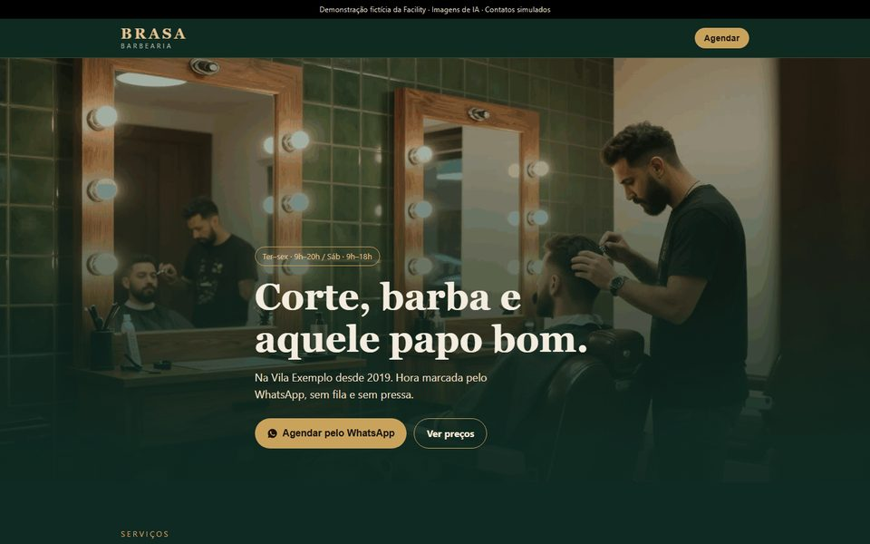
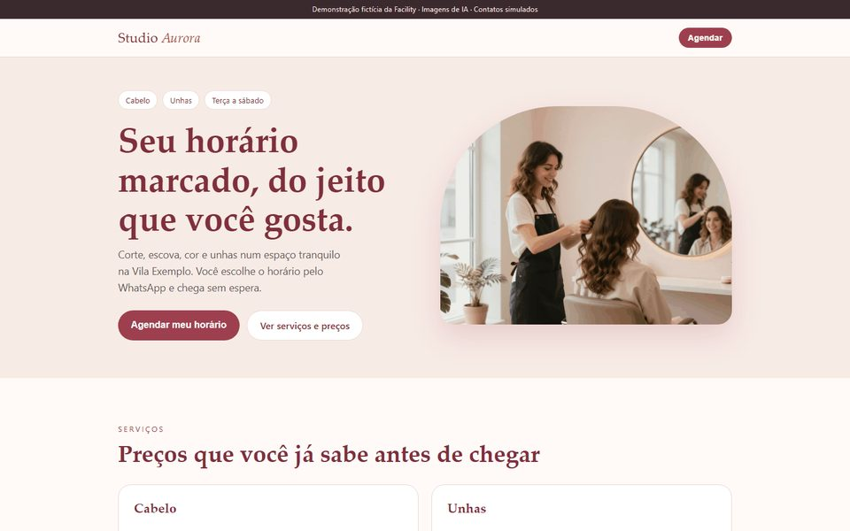
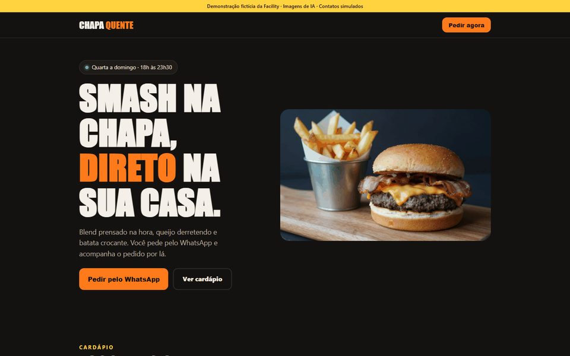

Barbearia Brasa
Corte e barba com hora marcada, tabela de preços e agendamento em um toque.

Studio Aurora
Salão de cabelo e unhas com serviços separados por categoria e horários visíveis.

Chapa Quente
Hamburgueria com cardápio, horário de funcionamento e pedido direto pelo WhatsApp.
Como foram feitos
- HTML, CSS e JavaScript puros, sem framework e sem etapa de build.
- Pensados primeiro para o celular e conferidos em 390 px e 1440 px.
- Botões de contato e mapa simulados: no site de um cliente real, abrem o WhatsApp e o mapa do negócio.